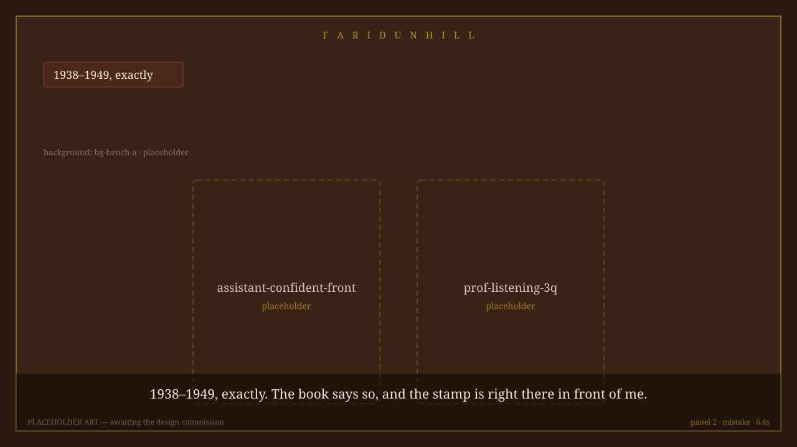
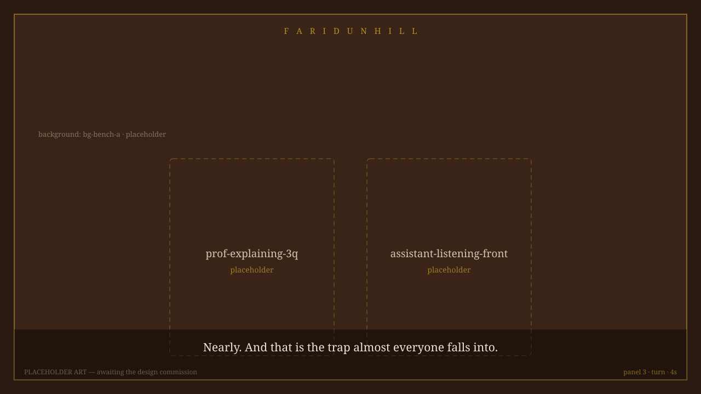
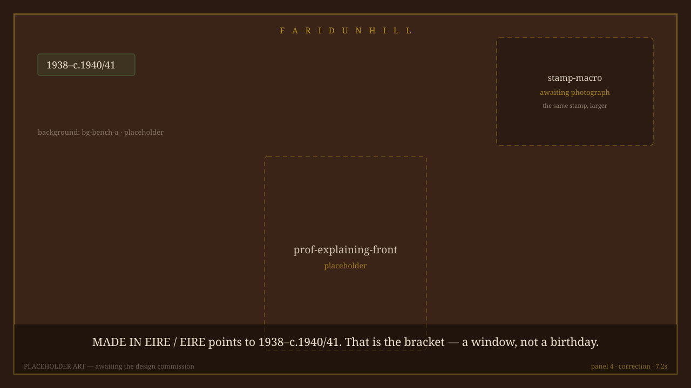
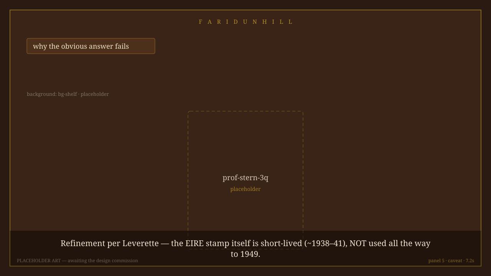
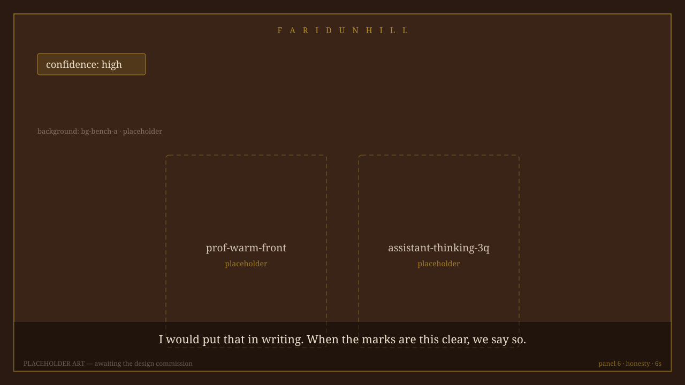
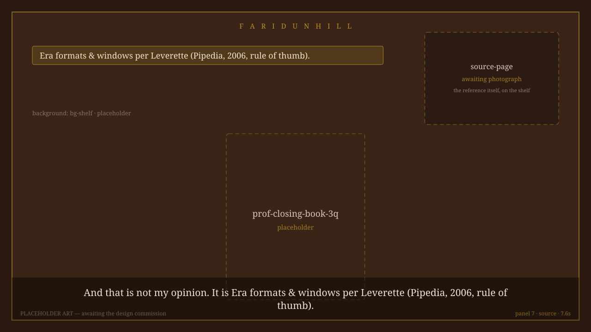

1. hook · 8s

2. mistake · 6.4s

3. turn · 4s

4. correction · 7.2s

5. caveat · 7.2s

6. honesty · 6s

7. source · 7.6s
This is a rough cut made from placeholder art. Every box on a panel is a real
asset id waiting for the design commission — the engine already knows what it needs.
12 asset ids are unfilled: assistant-confident-front, assistant-holding-pipe-3q, assistant-listening-front, assistant-thinking-3q, bg-bench-a, bg-shelf, prof-closing-book-3q, prof-explaining-3q, prof-explaining-front, prof-listening-3q, prof-stern-3q, prof-warm-front
Nothing above states a fact the cabinet did not carry, and the source line is
generated from the cabinet, not written by hand. When the art lands, the same panel
list renders in the finished style — this file does not get rewritten.